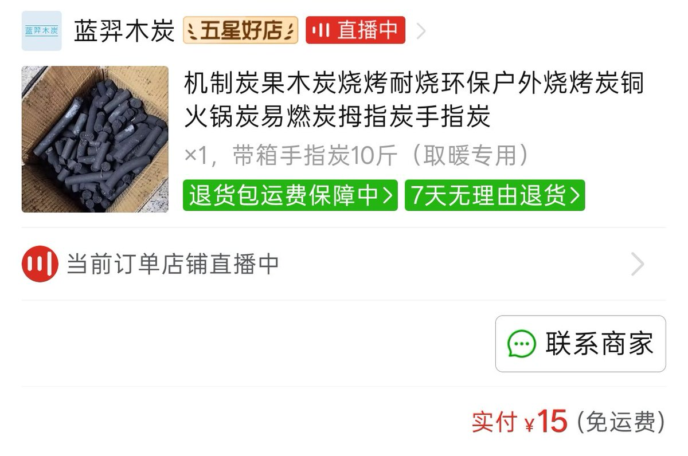

跨圈烂炸了，建议所有人无论是不是跨都不要混跨圈，打着跨的名头的一群神经病，跨圈肯定有正常人或好人，但是能容忍这群神人也不正常，想当跨完全没必要混跨圈，以焦虑，自残，自杀为自我价值，最压抑群体之一，根本不是跨的圈子而是各种本身价值观就扭曲的，互相强化妄想的小众圈子，不否认原神家庭影响，难道自己他妈没有问题吗，不追求平等与尊重，反而以谁的苦难更多谁的行为更猎奇为荣，当个跨觉得自己老牛逼了，不可被定义之物，一句顺畜走天下，妈的sb你认知高尚，你跨就是比顺清醒，极端老保是sb，是可以接受多种性取向和性认同，但你他妈当跨不等于高人一等，异性恋顺性别关你屁事，高高在上的sb认为只有当跨才是清醒的，其他人都不是心甘情愿选择异性恋都是被洗脑的，跨圈混圈平均智商巨婴这一块，全世界都欠你的，真是牛逼啊Sb
我不知道该如何描述，一种知道有问题但不知道哪有问题
其实朋友吃糖我的态度不会有任何变化，但是你不能以跨为错口随地乱拉，反对你的就是老保，
所有sb均指跨圈神人，对不起各位吃糖朋友，我想说的是跨圈这种烂人和风气，我无法定义什么是健康和正常，愿各位安好
我不知道该如何描述，一种知道有问题但不知道哪有问题
其实朋友吃糖我的态度不会有任何变化，但是你不能以跨为错口随地乱拉，反对你的就是老保，
所有sb均指跨圈神人，对不起各位吃糖朋友，我想说的是跨圈这种烂人和风气，我无法定义什么是健康和正常，愿各位安好
